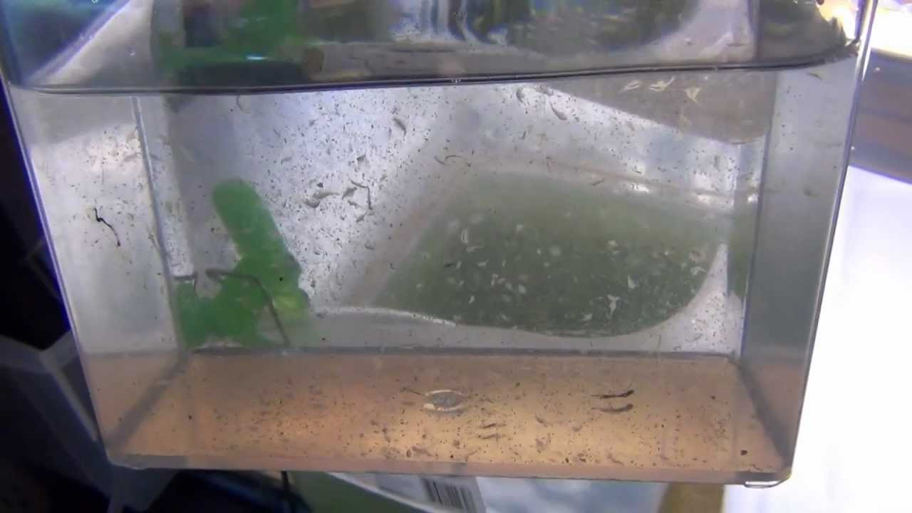
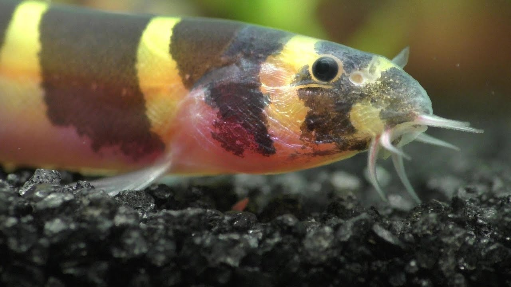
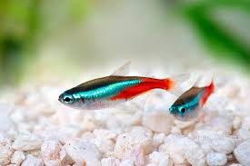
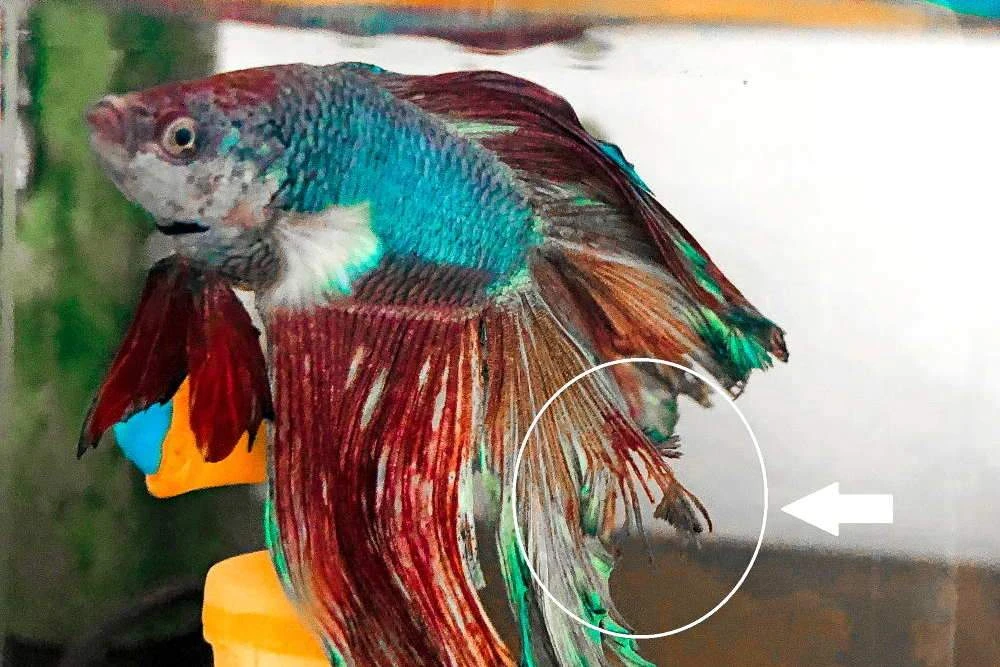

March 30, 2020
Where do betta fish come from ?
Betta Fish comes from rice paddies in Thailand.
Rice Paddies Of Thailand:

They were not as attractive and beautiful as we see them today in those days.
They did not have beautiful long fins and lustrous colors.
These were done by genetically modifying their genes.
Betta fish is commonly found in Asian countries like Vietnam, Cambodia etc.
The waters in which betta fish used to live were generally dirty.
What is the lifespan of a betta fish ?
The lifespan of a betta fish is about two years in the wild because of the dirty waters in which they live in these waters are generally polluted reducing their lifespan. In captivaty when we keep them in our aquariums they live for about 3 to 4 years but this depends on the way you care for it you have to do regular water changes weekly,provide a good diet etc. Read more about the lifespan of a betta fish in this article Lifespan Of A Betta Fish
.
What do betta fish eat ?
Betta Fish Eating Insects:
Betta fish are carnivorous fish. They usually eat the small insects they find in the rice paddies in the past.
Betta Fish Flake Food:
Modern day betta fish eat the following things:
Brine Shrimp
Frozen Bloodworms
Freeze Dried Blood Worms
Pellets Made For Betta Fish
Flake Food
Live Brine Shrimp Fish Food:

Read In Detail About Betta Fish Food in this Article Betta Fish Food
What is the water quality required for a betta fish ?
An Ideal Clean Betta Fish Tank:

The water quality requeired for a betta fish should not a have high chlorine content. We must do regular water changes weekly. By doing water changes we must make sure that we do not take the whole water of the tank we just take out 1/3 rd of the water if we take out the whole water out of our betta tank then this will shock our betta fish we do not want that to happen as stress can cause early deaths for betta fish. Why does it cause deaths for the betta fish because betta fish are very sensitive fish sudden changes in their environment will cause high disturbance for them and this can lead to stress. Never ever use soap for cleaning a betta fish tank. Also while cleaning the decorations of the tank we should not use soap instead we should just rinse it with water. Betta fish prefer living in hot waters. They want their wateer to be slightly acidic ph about 6.5.
Can betta fish have tank mates ?
It is always refered to not keep male betta fish with other fish because they are very aggresive fish they will fight with their tank mates for their terriotory. We can keep a community of female betta fish in a tank called
sonority tank This is a tank where many female betta fish can be put together and they will live in peace and harmony incase you find any betta fish fighting in this tank you must always have a quarantine tank prepared for putting that betta fish in the quarantine tank.Male betta fish are generally very aggresive so it is prefered not to put them with any tank mates.
Few possible tank mates for a male betta fish:
Kuhli Loaches

Ember Tetras
Feeder Guppies
Cory Catfish
Neon Tetras

Female Guppy
How to make a betta fish happy ?
To make a betta fish happy we must provide it the best home we can which is within our budget this includes putting decorations in its tank and giving it ample space to swim around.
We must provide it good quality food. Have some aquarium plants in our aquarium to make it look like its orginal habitat.
Here is an awesome video on 10 tips to make your betta fish happy by KGTropicals Check it out: Top 10 Tips To Make Your Betta Fish Happy.
Decorations you could have in your betta tank:
Artificial Aqurium Plants
Have gravel or sand in your aquarium
Hiding spot decorations like small rocks
Put pebbles in your aquarium
Try to get some live aquarium plants if you can
Read more about other betta products you could have in your aquarium in this article Betta Fish Products For A Healthy And Happy Betta.
Do betta fish get sick ?
Yes ! Betta fish do get sick we should take care of a betta very properly for it not to get any diseases.
Here are a few diseases betta fish often get:
Fin Rot - Fin rot is a disease that happens in the fins of betta fish it could be due to a fungus or bacteria which comes in the fins of a betta fish. It occurs most probably because of unclean water.

Dropsy - Dropsy is a disease that causes the kidney of the betta fish to swell. It mostly indicates an organ failure it happens due to poor water qualities.
Popeye - It is a bacterial infection in betta fish which happens in the eye of the betta fish. It can lead to serious internal diseases. It is a disease which is very hard to cure. This disease also occur mostly due to poor water quality.
Velvet - It is a parasite infection. It is communicable disease it comes from other tank mates who maybe infected also aquarium decor which was in the tank of an infected fish.
As we can see here most of the betta fish diseases happen due to poor water conditions so it is always essential for us to do regular water changes to keep our betta happy and healthy.